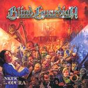

|
|
||
Blind Guardian : A Night at the Opera (2002) |
|

http://www.blind-guardian.com |
1. Precious Jerusalem 6:21 |
8.8/10 |
|
Tras cuatro años de silencio, Blind Guardian regresa, y regresa con más de todo: temas más largos, con más coros, más épicos, con composiciones más complejas y barrocas, y con la voz de Hansi Kürsch en su mejor momento. "A Night at the Opera" es un disco elaborado y muy, muy, recargado, hasta para Blind Guardian. Yo echo un poco en falta la mayor inmediatez, contundencia y simplicidad de sus primeros trabajos, pero si eres de los que piensan que el "Nightfall in Middle Earth" es su mejor disco, seguro que éste te encantará. En cuanto a las letras, éstas siguen tratando, en general, temas épicos, batallas, etc., aunque su inspiración es más variada que en discos anteriores, desde la mitología griega ("And Then There Was Silence") hasta el Nuevo Testamento ("Sadly Sings Destiny"). Un hecho que llama la atención es que hayan grabado "Harvest of Sorrow", la canción que apareció en el single que precedió a este último disco junto a "And the There Was Silence", en distintos idiomas. En la edición española, la canción se titula "Mies del Dolor", y permite por primera vez, que yo sepa, oir cantar a Hansi en español, lo que es toda una experiencia. "Precious Jerusalem" es un tema melódico, con coros pomposos, y un estribillo pegadizo y elaborado. Determinados pasajes nos permiten comprobar como la voz de Hansi está en su mejor momento, más potente que nunca. "Battlefield" posee un ritmo más marcado y rápido, aunque con algunos acertados cambios. En este tema los coros son casio omnipresentes, definiendo toda la melodía y creando una atmósfera absolutamente épica, preciosista y evocadora. En "Under the Ice", el sonido es algo más progresivo y oscuro, la voz es más contundente, y los coros menos melodiosos y más potentes, aunque en el estribillo se muestran más brillantes. "Sadly Sings Destiny" tiene también una base de guitarras bastante contundente, adornada ocasionalmente con curiosos sonidos de sintetizador, donde la voz de Hansi aporta toda su fuerza y los coros en el estribillo la pomposidad y la melodiosidad. El quinto corte, "The Maiden and the Minstrel Knight", es una balada con aire medieval, con un estribillo emocionante, fantásticamente adornado por los coros. "Wait for an Answer" recupera el ritmo rápido, aunque variado, con muchos cambios. Los coros aparecen con frecuencia, y el estribillo es de nuevo el punto culminante de la canción. "The Soulforged" es quizás un tema más directo, potente y rápido, con los coros aportando contundencia, atmósfera, y cuerpo a la canción, y elaborando otro estribillo absolutamente memorable. La inconfundible voz de Hansi de nuevo demuestra su gran estado de forma. "Age of False Innocence" comienza a ritmo lento, pero pronto gana en potencia, convirtiéndose en otro de los temas más directos del álbum. "Punishment Divine" cuenta con los mismos elementos que el resto del disco, quizás con un ritmo más rápido, y no destacaría si no fuera por el estribillo, épico, original y muy pegadizo. "And Then There Was Silence" es un tema muy largo, épico, elaborado, con muchas partes diferenciadas, que une distintos ritmos, pasajes con más coros y partes más directas, con un resultado bueno, que a pesar de su duración no aburre. El bonus, "Mies del Dolor", es una balada donde lo más destacable es que está en español, y en un español razonablemente bueno, aunque con alguna expresión curiosa, fruto sin duda de la dificultad de traducir una canción del inglés al español y que se pueda seguir cantando después. |
||
Rubén Béjar |
||